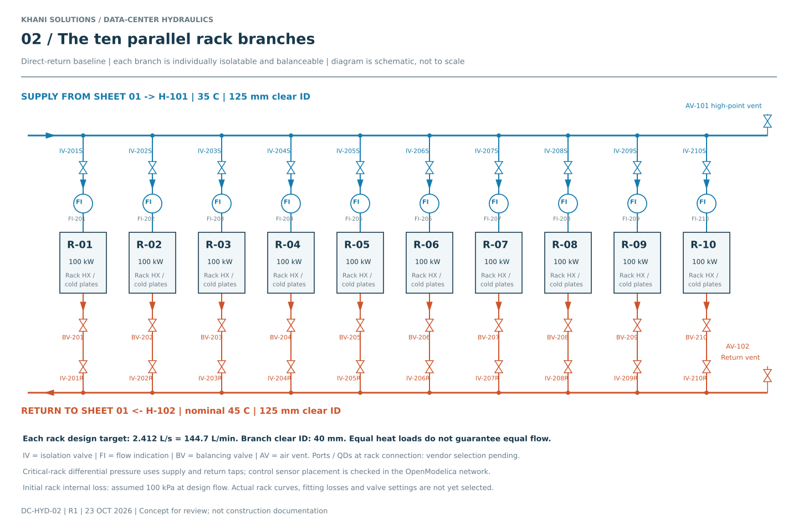
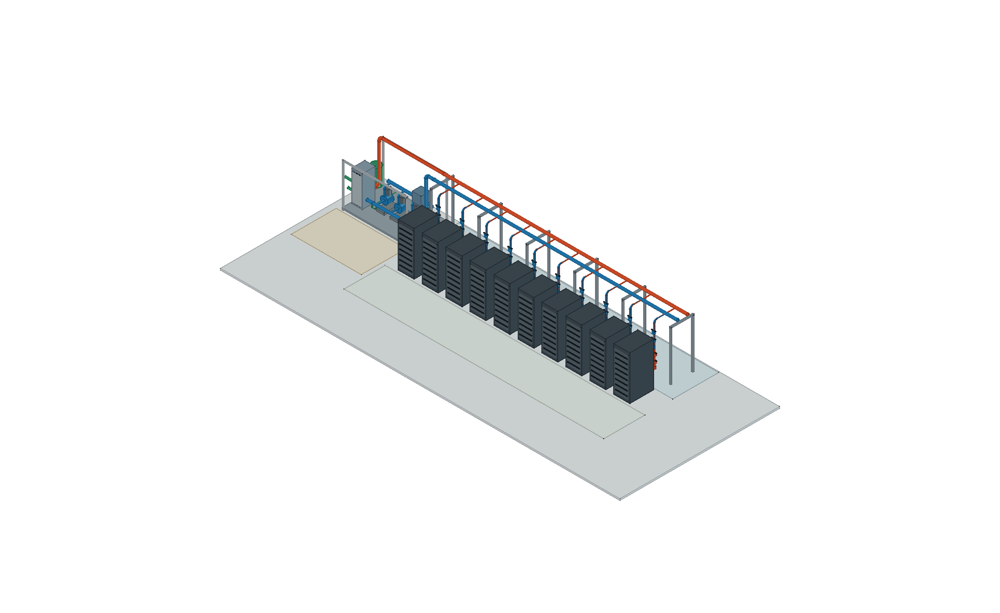

Follow any branch downward: supply header → isolation valve → flow measurement → rack cold plates → balancing valve → return isolation → return header. Valves and QDs require vendor curves and service details.

35 C supply45 C returnFacility / expansion connections
20 × 8 m planning envelope. Racks are 0.8 × 1.2 × 2.2 m at 1.2 m pitch. Header centerlines are 2.70 m above the floor over the rear service aisle. The CDU skeleton shows the exchanger, pump bank, filter envelope and expansion vessel. Service zones and supports are conceptual; they do not establish code compliance or structural sizing.
What changes from Stage 01?
| Item | Stage 01 presizing | This routing concept |
|---|---|---|
| Main supply + return headers | 40 m placeholder | 24.40 m straight external headers, plus CDU links and internal pipework itemized in the schedule |
| One rack branch pair | 20 m placeholder | 4.747 m routed branch centerline, excluding rack internals / connections represented by equipment resistance |
| Header / branch clear ID | 125 / 40 mm | Retained as starting diameters; not final selected pipe sizes |
| Pump head | Approximately 27.5 m | Not recalculated yet; network solve must use these routes and updated component curves |
The 2.70 m elevation changes local static pressure. In a filled, closed equal-density loop it does not add 2.70 m of net circulation head. Check fill pressure, component ratings and NPSH separately.
Open the actual working files

The QET project contains two editable folios built from native drawing primitives. It is a graphical piping diagram, not an electrical netlist or solver model. FreeCAD contains 285 valid positive-volume solid objects, verified after reopening; STEP import is also checked. The native assembly has editable objects and metadata; rerun the included macro to regenerate route geometry after changing its parameters.
Pipe walls are illustrative 4 mm (headers) and 3 mm (rack branches), not pressure-qualified. Tee intersections are layout joins; bores have not been combined into a continuous CFD fluid volume. Catalog selection, detailed safety/service design and interference checks remain future work.